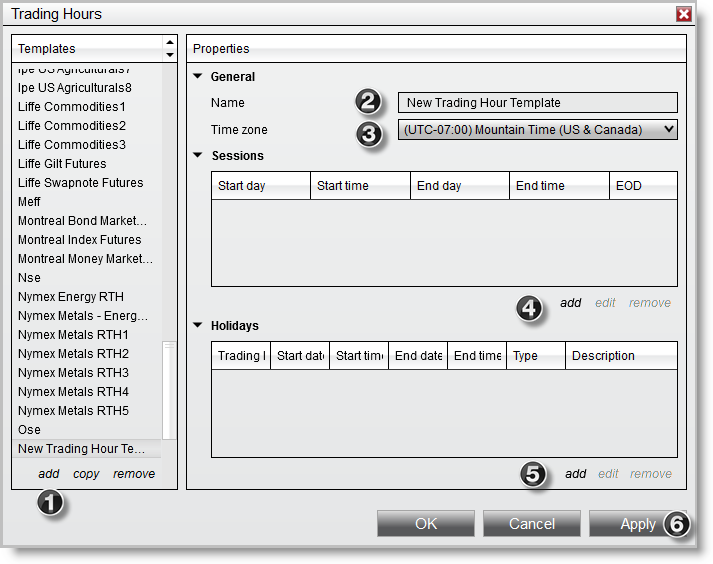
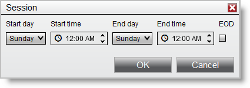
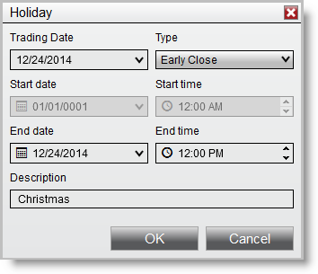

|
<< Click to Display Table of Contents >> Using the Trading Hours window |


|
Using the Trading Hours window
|
<< Click to Display Table of Contents >> Using the Trading Hours window |
|
Within the Trading Hours window, Trading Hour Templates hold the session definitions for each day of the week can be created and edited based on any time zone.
 Understanding Trading Hour Templates
Understanding Trading Hour Templates
Trading Hour TemplatesA Trading Hour Template is a collection of session definitions that can be used anywhere NinjaTrader utilizes data. When a template is applied, any data outside of the times in the session definitions will be ignored. NinjaTrader comes pre-loaded with the most common Trading Hour Templates and will also update these automatically from the NinjaTrader data server. You may also create your own custom Trading Hour Templates can also be created to suit your needs.
Where Trading Hour Templates can be AppliedTrading Hour Templates can be applied in the following NinjaTrader dialogue windows under the property "Trading Hours":
•Chart panel via the Data Series window •Market Analyzer via customizing columns •Strategy Analyzer window when configuring backtesting •Strategies tab of the Control Center when starting a strategy |
 How to create and edit a Trading Hour Template
How to create and edit a Trading Hour Template
Creating a Trading Hour Template If your desired session settings are not found within the pre-loaded Trading Hour Templates, you can create a new template.
To create a Trading Hour Template:
1.Left mouse click on "add" 2.Type in the name of the Trading Hours Template 3.Left mouse click on the time zone drop down menu and select the time zone that represents the time inputted in the session definitions 4.Select "add" to add a new session definition, see "Understanding session definitions" below for more information. Repeat for as many sessions as required
5. Optionally add any Trading Holidays, see "Understanding trading holidays" below for more information. Repeat for as many Trading Holidays as required.
6. Press the Apply button to save the configured session times in the Trading Hour Template.
 |
 Working with Trading Hour Templates
Working with Trading Hour Templates
A saved Trading Hour Template can be selected via the Template section to the left of the Trading Hours window. Selecting the template will allow you to configure individual session definitions and trading holiday definitions for that template.
Editing Trading Hour TemplatesTrading Hour Templates can be edited in the following ways:
•Left mouse click the "copy" button in the templates section and insert a new template name to copy the current Trading Hours Template. •Left mouse click the "remove" button in the templates section to delete the selected Trading Hours Template.
Editing Session DefinitionsIndividual session definitions can be edited in the following ways:
•Left mouse click on a session definition and press the "edit" button in the sessions section to edit the session. •Left mouse click on the "remove" button in the sessions section to delete the selected session definition.
Editing Holiday DefinitionsIndividual holiday definitions can be edited in the following ways:
•Left mouse click on a trading holiday and press the "edit" button in the holidays section to edit the holiday. •Left mouse click on the "remove" button in the holidays section to delete the selected session definition. |
 Understanding session definitions
Understanding session definitions
Understanding Session DefinitionsEach session is defined with a start day and time and end day and time. You can have multiple sessions per day, however on the last session of the day you would check mark "EOD(End of Day)". This tells NinjaTrader that this session signifies the ending session for the current trading day and the next session will be counted as the next trading dates session. 
|
 Understanding trading holidays
Understanding trading holidays
Understanding Trading HolidaysNinjaTrader will exclude trading holidays that are defined in the Trading Hour Template.
Each Holiday has a Trading Date, Type, Start date, Start Time, End date, End time, and Description. The Holidays type will determine what fields are available.
Holiday Types
|